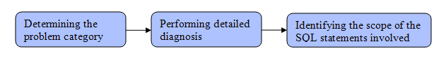

Problem to diagnose
The following problem is used in this example: The SALES_CHECKOUTAPPLICATION
is slowed down due to spending more time in SQL compilation processing.
Troubleshooting this problem is considered complete once the database administrator
has found the answers to the following questions:
- What is the general nature of problem as determined by the initial diagnosis?
- What part of the user workload is impacted by the slowdown? What does this set of SQL statements have in common?
- What is the detailed nature of the problem determined during the detailed diagnosis?
- What sequence of events led to this problem?
Tutorial flow
